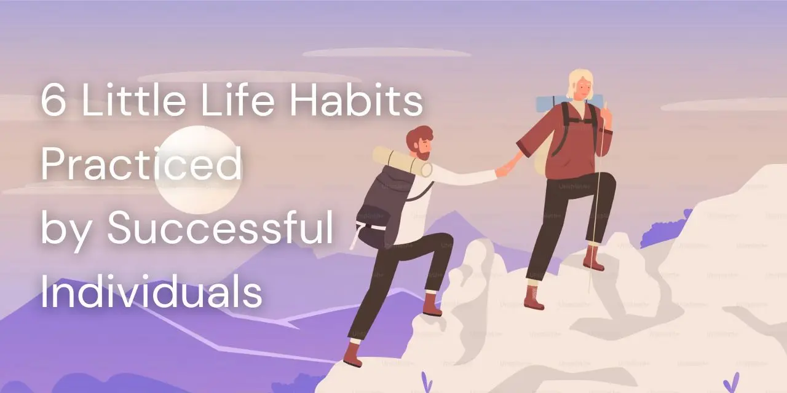

6 Little Life Habits Practiced by Successful Individuals
Published March 22, 2025


Excelling in academics isn’t just about studying hard and participating in class—it also involves adopting key life habits that many successful individuals rely on. These simple yet powerful routines can enhance your academic journey, helping you grow both as a student and as a person. It’s not just about earning Latin honors; it’s about making learning an integral part of who you are, both now and in the future.
Napoleon Hill once said, “Successful people make decisions quickly (as soon as all the facts are available) and firmly. Unsuccessful people make decisions slowly, and they change them often.” This highlights the importance of decisiveness in achieving success.
Dr. Sarah Mitchell, a renowned organizational psychologist, emphasizes that true success isn’t just about acquiring knowledge—it’s about consistently applying it. Likewise, Adam Grant, a professor at the Wharton School, reminds us that learning doesn’t stop once we gain new knowledge; it continues through how we use and integrate it into our lives. Successful individuals recognize the value of discipline and routine, incorporating small yet meaningful habits into their daily lives to drive long-term growth.
Successful individuals recognize the significance of routine and discipline, weaving small yet powerful habits into their daily lives. As Adam Grant, an organizational psychologist and professor at the Wharton School of the University of Pennsylvania, points out, the process of learning doesn’t end with acquiring knowledge—it continues through its application.
Here are six simple yet effective daily habits that successful people follow:
1) Set a mistake budget for trial and error.
Set a target for the maximum number of errors you aim to make each day or week. When you anticipate making mistakes, you dwell on them less and improve faster. Rather than simply focusing on learning, aim to embrace discomfort. Stepping outside your comfort zone may feel strange and unfamiliar initially, but it’s where growth happens.2) Ask for advice, not feedback.
Feedback focuses on evaluating your past actions, while advice is forward-focused, guiding your future steps. A simple question to ask is: “What’s one thing I can improve on next time?” Not all information is valuable, so it’s important to filter out what’s unnecessary. Surround yourself with cheerleaders who can also act as coaches—people with relevant expertise, who understand you well, and genuinely want the best for you.3) Strive for progress over perfection.
Prioritize ongoing progress and development instead of chasing unrealistic, flawless perfection. At the end of each day, reflect by asking: Did I improve myself, even just a little, today?4) Find fun in your daily grind.
Every instance of repetitive hard work is a chance to learn and grow further. Find joy and fulfillment in even the smallest moments—whether it’s savoring the scent of your morning coffee, basking in the warmth of sunlight on your commute, embracing opportunities to collaborate, or celebrating minor victories along the way.5) Open doors for other people.
Avoid gatekeeping—whether by excluding others or withholding knowledge. Instead, actively welcome diverse perspectives, share information openly, and offer support to those around you. Learning is a two-way process: you can share your expertise while also gaining insights from others, which fosters greater skill development. This can be done in group settings, where each member contributes by teaching a unique skill or piece of knowledge.6) Look back to help you move forward.
When you find it hard to recognize your progress, try reflecting on how your past self would see your current accomplishments. Consider the distance you’ve traveled and the growth you’ve achieved. If your past self from five years ago could see where you are today, how proud and inspired would they be?Success doesn’t happen overnight—it’s the outcome of small, consistent, and positive habits practiced every day. By integrating these habits into our routines, anyone can build a foundation for achievement. The journey to success can be inspired by those who have already achieved greatness, as their paths offer valuable lessons and guidance.